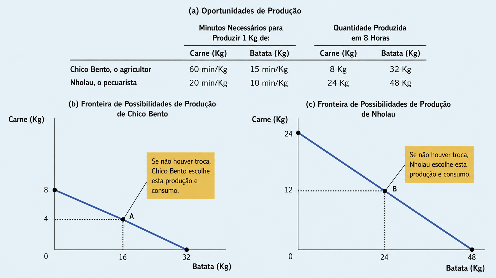
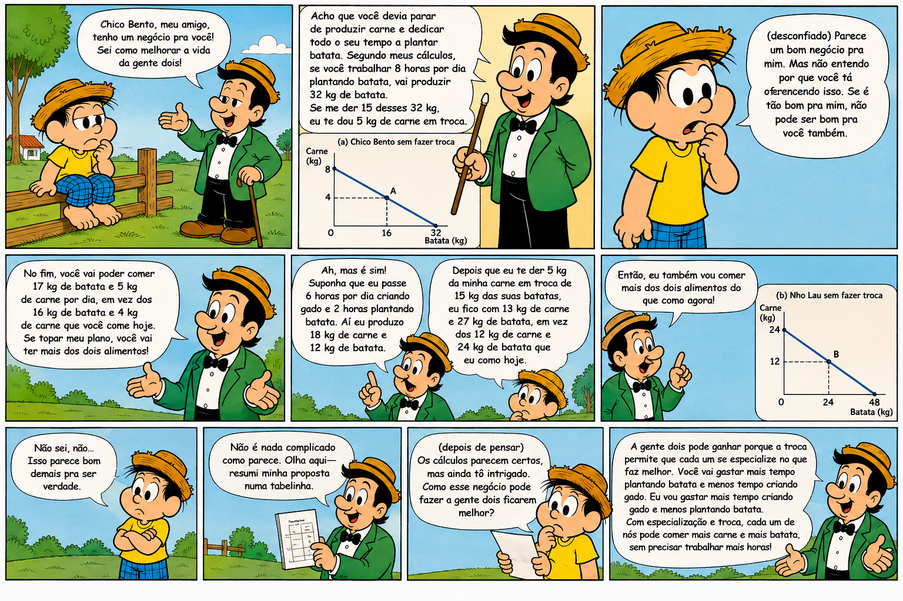
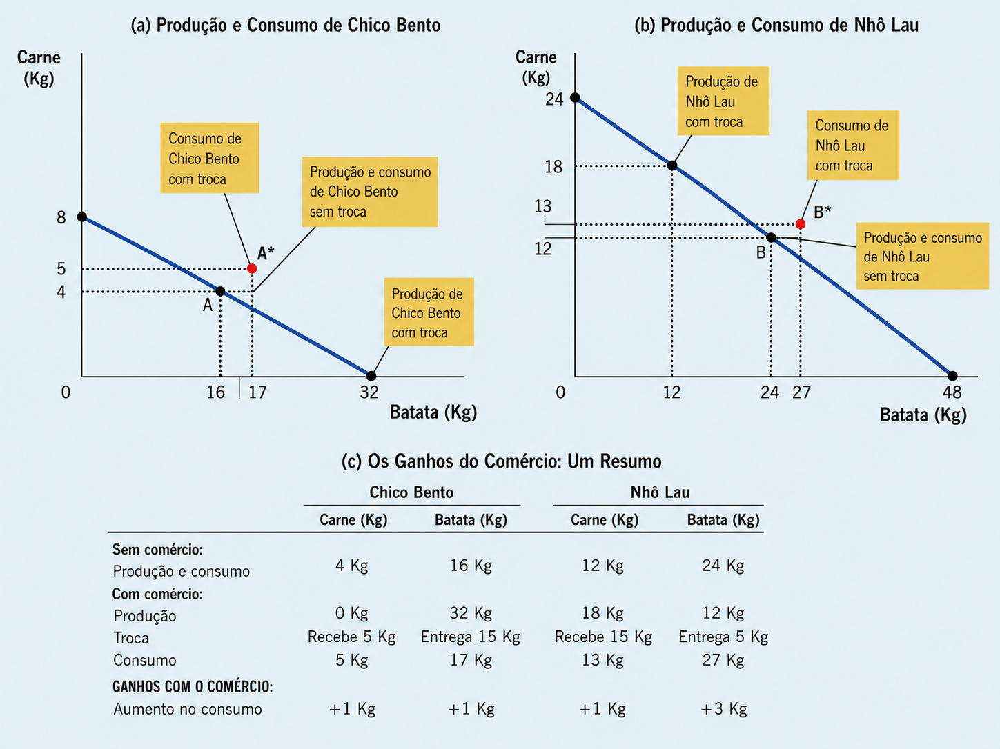

Aula 3 - Interdependência e ganhos de comércio
02 — Possibilidade de produção
03 — Especialização e comércio
05 — Custo de oportunidade e vantagens comparativas
06 — Vantagens comparativas e comércio
08 — Aplicação da vantagem comparativa
Por que escolhemos depender de outras pessoas para produzir bens e serviços? (Princípio 5)
Imagine uma economia extremamente simples:
🥩 Seu Nholau é pecuarista. 🥔 Chico Bento é agricultor.
Ambos gostam de consumir carne e batatas.
Se cada um tentar ser autossuficiente, terá de produzir sozinho tudo o que deseja consumir.
Mas existe uma alternativa:
Especializar-se naquilo que faz relativamente melhor e realizar trocas.
Por meio da especialização e do comércio, ambos podem ampliar suas possibilidades de consumo e melhorar seu bem-estar.
A questão central
E se seu Nholau for melhor do que o Chico Bento tanto na produção de carne, quanto na de batatas?
Ainda assim pode haver ganhos com o comércio?
A resposta é sim e sua explicação iremos explorar.

O ponto importante é que Nholau é mais produtivo nos dois bens. Ele tem, portanto, vantagem absoluta tanto em carne quanto em batatas.
A pergunta que conduz à próxima parte é:
Se Nholau é melhor em tudo, como Chico Bento ainda pode contribuir para uma troca vantajosa?
A resposta é dada pelo custo de oportunidade e pela vantagem comparativa.


🌴 Caramuru e a Fronteira de Possibilidades de Produção
Imagine Caramuru, um degredado português que acabou de chegar a uma nova terra, ele divide seu tempo entre duas atividades:
🐟 Pescar 🍎 Coletar frutas na floresta
Desenhe um exemplo de uma Fronteira de Possibilidades de Produção (FPP) para Caramuru, considerando que ele divide seu tempo entre pescar e coletar frutas na floresta.
Essa fronteira limita o consumo de peixes e frutas de Caramuru se ele viver sozinho?
Caramuru enfrentaria os mesmos limites se pudesse realizar trocas com os nativos locais?
A explicação dos ganhos do comércio apresenta um aparente paradoxo:
Se Nhô Lau é melhor tanto na criação de gado quanto na produção de batatas, em que Chico Bento poderia se especializar?
Afinal, Nhô Lau é mais produtivo nas duas atividades.
Para resolver o paradoxo, precisamos introduzir o princípio da vantagem comparativa.
Comecemos com uma pergunta:
Quem produz batatas a um custo menor: Chico Bento ou Nhô Lau?
Existem duas maneiras diferentes de responder a essa pergunta.
E é justamente nessa diferença que está a chave para compreender por que a especialização e o comércio podem beneficiar os dois.
Uma forma de comparar o custo de produção é observar a quantidade de recursos necessários para produzir cada bem.
Vantagem absoluta: ocorre quando um produtor utiliza menos recursos para produzir uma unidade de determinado bem.
No nosso exemplo, o único recurso considerado é o tempo de trabalho.
| Produtor | 1 kg de carne | 1 kg de batata |
|---|---|---|
| Chico Bento | 60 min | 15 min |
| Nhô Lau | 20 min | 10 min |
Quem possui vantagem absoluta?
Nhô Lau nos dois bens.
🥩 Carne: 20 min < 60 min 🥔 Batata: 10 min < 15 min
Portanto, medindo o custo pela quantidade de insumos utilizados, Nhô Lau tem menor custo de produção tanto de carne quanto de batatas.
Mas o nosso paradoxo continua…
Se Nhô Lau possui vantagem absoluta em tudo, por que ele deveria negociar com Chico Bento?
A resposta exige outra maneira de medir o custo: o custo de oportunidade.
Existe uma segunda maneira de comparar os custos de produção.
Em vez de perguntar quem utiliza menos tempo, podemos perguntar:
O que cada produtor precisa deixar de produzir para obter 1 kg a mais de outro bem?
Esse é o custo de oportunidade.
🥔 Custo de oportunidade da batata
Nhô Lau:
1 kg de batata exige 10 min Em 10 min, poderia produzir 0,5 kg de carne
Portanto:
1 kg de batata custa 0,5 kg de carne
Chico Bento:
1 kg de batata exige 15 min Em 15 min, poderia produzir 0,25 kg de carne
Portanto:
1 kg de batata custa 0,25 kg de carne
| Produtor | Custo de 1 kg de carne | Custo de 1 kg de batata |
|---|---|---|
| Chico Bento | 4 kg de batata | 0,25 kg de carne |
| Nhô Lau | 2 kg de batata | 0,50 kg de carne |
Quem possui vantagem comparativa?
Vantagem comparativa pertence a quem apresenta o menor custo de oportunidade.
🥔 Batata → Chico Bento
1 kg de batata custa apenas 0,25 kg de carne, contra 0,50 kg para Nhô Lau.
🥩 Carne → Nhô Lau
1 kg de carne custa apenas 2 kg de batata, contra 4 kg para Chico Bento.
A chave para resolver o aparente paradoxo:
Nhô Lau possui vantagem absoluta nos dois bens, mas não possui vantagem comparativa nos dois.
Chico Bento deve especializar-se relativamente mais em batatas, enquanto Nhô Lau deve se especializar relativamente mais em carne.
É a vantagem comparativa, e não a vantagem absoluta, que explica os ganhos da especialização e do comércio.
Os ganhos do comércio não dependem da vantagem absoluta, mas da vantagem comparativa.
Quando cada pessoa se especializa no bem em que possui menor custo de oportunidade, a produção total da economia aumenta.
No nosso exemplo:
🥔 Chico Bento se especializa mais na produção de batatas. 🥩 Nhô Lau se especializa mais na produção de carne.
O “bolo” econômico aumenta
| Produção total | Sem especialização | Com especialização |
|---|---|---|
| 🥔 Batatas | 40 kg | 44 kg |
| 🥩 Carne | 16 kg | 18 kg |
A especialização permite produzir mais dos dois bens com os mesmos recursos.
Por que a troca é vantajosa para ambos?
Chico Bento
Chico entrega 15 kg de batatas e recebe 5 kg de carne.
Logo:
1 kg de carne = 3 kg de batatas
Mas produzir 1 kg de carne por conta própria custaria a Chico 4 kg de batatas.
Preço da troca: 3 kg < Custo de oportunidade: 4 kg
➡️ Chico ganha com a troca.
Nhô Lau
Nhô Lau entrega 5 kg de carne e recebe 15 kg de batatas.
Logo:
1 kg de batata = ⅓ kg de carne
Mas produzir 1 kg de batata por conta própria custaria a Nhô Lau ½ kg de carne.
Preço da troca: ⅓ kg < Custo de oportunidade: ½ kg
Nhô Lau também ganha com a troca.
A grande conclusão:
O comércio pode beneficiar todos porque permite que cada pessoa se especialize na atividade em que possui vantagem comparativa.
A vantagem comparativa mostra que existem ganhos com a especialização e o comércio. Mas surgem duas questões:
A que preço ocorrerá a troca?
Como os ganhos do comércio serão divididos?
Há uma regra fundamental:
Para que ambos ganhem, o preço da troca deve estar entre os custos de oportunidade dos dois produtores.
No caso de Chico Bento e Nhô Lau, o custo de oportunidade de 1 kg de carne é:
| Produtor | Custo de oportunidade de 1 kg de carne |
|---|---|
| Nhô Lau | 2 kg de batatas |
| Chico Bento | 4 kg de batatas |
Portanto, uma troca mutuamente vantajosa exige:
2 kg de batatas < Preço de 1 kg de carne < 4 kg de batatas
Chico Bento e Nhô Lau negociam a:
1 kg de carne = 3 kg de batatas
Como 3 está entre 2 e 4, ambos podem ganhar.
E se o preço estiver fora desse intervalo?
Preço < 2 kg de batatas:
Os dois prefeririam comprar carne → ninguém desejaria vendê-la.
Preço > 4 kg de batatas:
Os dois prefeririam vender carne → ninguém desejaria comprá-la.
Preço entre 2 e 4:
Nhô Lau deseja vender carne e comprar batatas, enquanto Chico Bento deseja vender batatas e comprar carne.
Regra geral
Custo de oportunidade do vendedor < Preço da troca < Custo de oportunidade do comprador
Assim, cada um se especializa no bem em que possui vantagem comparativa, e o comércio permite que ambos melhorem sua situação.
Caramuru pode coletar 10 kg de frutas ou pescar 1 peixe por hora. Seu amigo, o Cacique Itaparica, pode coletar 30 kg de frutas ou pescar 2 peixes por hora.
Qual é o custo de oportunidade de Caramuru para pescar 1 peixe?
Qual é o custo de oportunidade do Cacique Itaparica?
Quem possui vantagem absoluta na pesca?
Quem possui vantagem comparativa na pesca?
Questionamento A) Um cirurgião, que também seja o datilografista mais rápido do mundo, deve ser seu próprio secretário?
Questionamento B) Análise econômica da divisão das tarefas domésticas. Quem faz qual atividade dentro de casa?
Questionamento C) Os países devem comercializar? As nações, como um todo, estarão melhores? Todos os grupos dentro de cada país estará melhor?
Por que vivemos em uma economia interdependente?
A vantagem comparativa explica por que indivíduos, regiões e países podem se beneficiar da especialização e das trocas.
Especializar-se na atividade de menor custo de oportunidade permite ampliar a produção e as possibilidades de consumo.
O que aprendemos?
Custo de oportunidade → Vantagem comparativa → Especialização → Comércio → Ganhos mútuos
Mas surge uma nova questão:
Em uma economia com milhões de pessoas, quem coordena todas essas decisões?
Como os bens chegam de quem os produz até quem deseja consumi-los?
Próximo capítulo
Oferta e Demanda: como os mercados coordenam a atividade econômica
Algumas questões de concurso:
1. FGV — ALE-AM — Analista Legislativo/Economista — 2025
Dois países, A e B, produzem apenas trigo (T) e aço (A), com a mesma dotação de fatores. Em um dia:
| País | Trigo | Aço |
|---|---|---|
| A | 12 | 6 |
| B | 6 | 4 |
Assinale a opção correta sobre vantagem comparativa e especialização sob livre comércio.
2. CEBRASPE — CODEVASF — Analista/Economia — 2021
Um país tem vantagem comparativa quando seu custo de oportunidade para um bem específico é menor que o de outro país.
3. FGV — Prefeitura de Cuiabá — Auditor Fiscal — 2014
A questão apresenta o caso da indústria chinesa de calçados: a mão de obra chinesa possui maior produtividade e sua indústria apresenta menor custo de oportunidade na produção de calçados.
A China apresenta:
4. CETAP — SEPLAD-PA — Economista — 2021
No processo de comércio entre países, a vantagem comparativa:
5. CEBRASPE — ANATEL — Especialista em Regulação/Economia — 2009
Para os economistas da escola clássica, as vantagens comparativas relativas entre os países constituem o fundamento teórico da especialização econômica, potencializada pelo comércio internacional.
6. CEBRASPE — APEX Brasil — Analista/Negócios Internacionais — 2021
Dois países produzem x e y, utilizando apenas trabalho:
Situação 1
| País | Bem X | Bem Y |
|---|---|---|
| A | 4 | 8 |
| B | 1 | 6 |
Situação 2
| País | Bem X | Bem Y |
|---|---|---|
| A | 4 | 8 |
| B | 1 | 2 |
Assinale a alternativa correta:
7. CEBRASPE — Instituto Rio Branco (CACD) — 2024
Um comentarista diz sobre o baterista João:
“João não é o melhor baterista do mundo… ele não é nem o melhor baterista da sua banda!”
Carlos é o guitarrista da banda, mas também poderia tocar bateria. A contribuição de cada músico pode ser medida pela receita que gera para a banda.
julgue:
O custo de oportunidade relativo de João ser baterista é menor que o custo de oportunidade relativo de Carlos ser baterista.
Gabarito
Questão 1 — FGV — ALE-AM — Analista Legislativo/Economista — 2025
Dois países, A e B, produzem apenas trigo (T) e aço (A), com a mesma dotação de fatores. Em um dia:
| País | Trigo | Aço |
|---|---|---|
| A | 12 | 6 |
| B | 6 | 4 |
Assinale a opção correta sobre vantagem comparativa e especialização sob livre comércio.
Tip
Gabarito: B
Para identificar a vantagem comparativa, devemos comparar os custos de oportunidade.
Para o país A:
\[ CO_A(T)=\frac{6}{12}=0,5\text{ unidade de aço} \]
O custo de oportunidade de 1 unidade de aço é:
\[ CO_A(A)=\frac{12}{6}=2\text{ unidades de trigo} \]
Para o país B:
\[ CO_B(T)=\frac{4}{6}\approx0,67\text{ unidade de aço} \]
e
\[ CO_B(A)=\frac{6}{4}=1,5\text{ unidade de trigo} \]
Comparando:
| Bem | País A | País B | Menor custo |
|---|---|---|---|
| Trigo | 0,5 aço | 0,67 aço | A |
| Aço | 2 trigo | 1,5 trigo | B |
Assim:
Portanto, sob livre comércio, A tende a se especializar relativamente em trigo e B em aço.
A) ERRADA. Inverte as vantagens comparativas.
B) CORRETA. A apresenta menor custo de oportunidade no trigo e B no aço.
C) ERRADA. Os custos de oportunidade são diferentes.
D) ERRADA. A possui vantagem absoluta nos dois bens, mas vantagem absoluta não determina, sozinha, o padrão de especialização.
E) ERRADA. Um país não pode possuir maior custo de oportunidade nos dois bens simultaneamente nessa situação. Se possui maior custo em um, necessariamente terá menor custo relativo no outro.
Ideia-chave: vantagem absoluta depende da produtividade; vantagem comparativa depende do custo de oportunidade.
Questão 2 — CEBRASPE — CODEVASF — Analista/Economia — 2021
“Um país tem vantagem comparativa quando seu custo de oportunidade para um bem específico é menor que o de outro país.”
Certo ou Errado?
Tip
Gabarito: CERTO
A afirmação apresenta exatamente a definição de vantagem comparativa.
Um país possui vantagem comparativa na produção de determinado bem quando consegue produzi-lo com menor custo de oportunidade em comparação com outro país.
Isso não significa necessariamente que ele seja mais produtivo em termos absolutos.
Um país pode ser menos produtivo na produção de todos os bens e ainda possuir vantagem comparativa em algum deles.
Ideia-chave:
Questão 3 — FGV — Prefeitura de Cuiabá — Auditor Fiscal — 2014
A questão apresenta o caso da indústria chinesa de calçados: a mão de obra chinesa possui maior produtividade e sua indústria apresenta menor custo de oportunidade na produção de calçados.
A China apresenta:
Tip
Gabarito: D
A questão apresenta duas informações diferentes:
Essas informações correspondem a dois conceitos distintos.
Maior produtividade → vantagem absoluta.
Um país possui vantagem absoluta quando consegue produzir maior quantidade de um bem utilizando a mesma quantidade de recursos.
Menor custo de oportunidade → vantagem comparativa.
Um país possui vantagem comparativa quando sacrifica menor quantidade de outros bens para produzir determinada mercadoria.
Portanto:
A) ERRADA. Menor custo de oportunidade caracteriza vantagem comparativa, não absoluta.
B) ERRADA. Embora a China possua vantagem absoluta, o menor custo de oportunidade caracteriza adicionalmente vantagem comparativa.
C) ERRADA. Os conceitos estão invertidos.
D) CORRETA. Maior produtividade gera vantagem absoluta; menor custo de oportunidade gera vantagem comparativa.
E) ERRADA. Maior produtividade caracteriza vantagem absoluta.
Ideia-chave:
Produtividade → vantagem absoluta.
Custo de oportunidade → vantagem comparativa.
Questão 4 — CETAP — SEPLAD-PA — Economista — 2021
No processo de comércio entre países, a vantagem comparativa:
Tip
Gabarito: A
A vantagem comparativa é determinada pela comparação entre os custos de oportunidade.
Um país possui vantagem comparativa na produção de determinado bem quando seu custo de oportunidade é menor que o observado nos demais países.
A) CORRETA. Apresenta corretamente o conceito de vantagem comparativa.
B) ERRADA. A vantagem comparativa está associada ao menor, e não ao maior, custo de oportunidade.
C) ERRADA. A produtividade está relacionada principalmente ao conceito de vantagem absoluta. A vantagem comparativa depende da produtividade relativa entre diferentes bens, refletida no custo de oportunidade.
D) ERRADA. Diferenças salariais podem influenciar custos de produção, mas não constituem a definição de vantagem comparativa.
Ideia-chave: o comércio internacional pode ser vantajoso mesmo quando um país é menos produtivo em todos os bens, desde que existam diferenças nos custos de oportunidade.
Questão 5 — CEBRASPE — ANATEL — Especialista em Regulação/Economia — 2009
“Para os economistas da escola clássica, as vantagens comparativas relativas entre os países constituem o fundamento teórico da especialização econômica, potencializada pelo comércio internacional.”
Certo ou Errado?
Tip
Gabarito: CERTO
A teoria das vantagens comparativas, associada principalmente a David Ricardo, mostra que países podem obter ganhos com o comércio internacional quando se especializam relativamente na produção dos bens em que apresentam menor custo de oportunidade.
Mesmo que determinado país tenha vantagem absoluta na produção de todos os bens, o comércio ainda pode gerar benefícios para ambos os países.
O fundamento da especialização não é, portanto, a vantagem absoluta, mas a vantagem comparativa.
A especialização seguida de comércio permite que a produção conjunta e as possibilidades de consumo dos países sejam ampliadas.
Ideia-chave: diferenças nos custos de oportunidade criam a base econômica para especialização e comércio.
Questão 6 — CEBRASPE — APEX Brasil — Analista/Negócios Internacionais — 2021
Dois países produzem x e y, utilizando apenas trabalho.
Situação 1
| País | Bem X | Bem Y |
|---|---|---|
| A | 4 | 8 |
| B | 1 | 6 |
Situação 2
| País | Bem X | Bem Y |
|---|---|---|
| A | 4 | 8 |
| B | 1 | 2 |
Assinale a alternativa correta:
Warning
Atenção: na forma como a questão está transcrita, as alternativas A e D são verdadeiras.
Vamos calcular os custos de oportunidade.
Situação 1
Para o país A:
\[ CO_A(X)=\frac{8}{4}=2Y \]
e
\[ CO_A(Y)=\frac{4}{8}=0,5X \]
Para o país B:
\[ CO_B(X)=\frac{6}{1}=6Y \]
e
\[ CO_B(Y)=\frac{1}{6}X \]
Assim:
Além disso, A possui vantagem absoluta nos dois bens, pois produz mais X e mais Y.
Mesmo assim, existem diferenças nos custos de oportunidade e, portanto, há possibilidade de ganhos mútuos com o comércio.
Logo, a alternativa A é verdadeira.
Situação 2
Para o país A:
\[ CO_A(X)=\frac{8}{4}=2Y \]
Para o país B:
\[ CO_B(X)=\frac{2}{1}=2Y \]
Os custos de oportunidade são exatamente iguais.
Para Y:
\[ CO_A(Y)=\frac{4}{8}=0,5X \]
e
\[ CO_B(Y)=\frac{1}{2}=0,5X \]
Novamente, são iguais.
Assim, nenhum país possui vantagem comparativa.
Logo, não existe fundamento para especialização decorrente de diferenças nos custos de oportunidade.
Portanto, a alternativa D também é verdadeira.
A) VERDADEIRA. Na situação 1 existem vantagens comparativas distintas e ganhos potenciais com o comércio.
B) ERRADA. Os ganhos do comércio podem ser compartilhados pelos países; não pertencem necessariamente ao país maior.
C) ERRADA. Na situação 2 os custos de oportunidade são iguais.
D) VERDADEIRA. Na situação 2 não existem diferenças de custos de oportunidade que fundamentem comércio mutuamente vantajoso pelo modelo ricardiano apresentado.
Conclusão: se a questão for de alternativa única exatamente como transcrita, há um problema no enunciado, pois A e D estão corretas.
Questão 7 — CEBRASPE — Instituto Rio Branco (CACD) — 2024
Um comentarista diz sobre o baterista João:
“João não é o melhor baterista do mundo… ele não é nem o melhor baterista da sua banda!”
Carlos é o guitarrista da banda, mas também poderia tocar bateria. A contribuição de cada músico pode ser medida pela receita que gera para a banda.
Julgue:
“O custo de oportunidade relativo de João ser baterista é menor que o custo de oportunidade relativo de Carlos ser baterista.”
Certo ou Errado?
Tip
Gabarito: CERTO
O item explora justamente a diferença entre vantagem absoluta e vantagem comparativa.
O fato de Carlos poder ser melhor baterista que João indica que João não necessariamente possui vantagem absoluta na bateria.
Isso, porém, não significa que Carlos deva ocupar essa função.
O importante é considerar aquilo de que cada músico precisa abrir mão.
Se Carlos deixar a guitarra para tocar bateria, a banda perde sua contribuição como guitarrista. Esse é o seu custo de oportunidade de tocar bateria.
Já João possui menor contribuição relativa na atividade alternativa. Portanto, o que a banda sacrifica ao mantê-lo na bateria é relativamente menor.
Assim:
\[ CO_{\text{João, bateria}} < CO_{\text{Carlos, bateria}} \]
João possui, portanto, vantagem comparativa na bateria, mesmo que Carlos possa possuir vantagem absoluta nessa atividade.
Esse é exatamente o princípio ricardiano:
Não importa apenas quem faz determinada atividade melhor em termos absolutos, mas quem possui o menor custo de oportunidade para realizá-la.
O gabarito registrado para esse item é CERTO. :contentReferenceoaicite:0
Ideia-chave: alguém pode ser pior em determinada atividade em termos absolutos e, ainda assim, ser a pessoa que deve realizá-la por possuir vantagem comparativa.